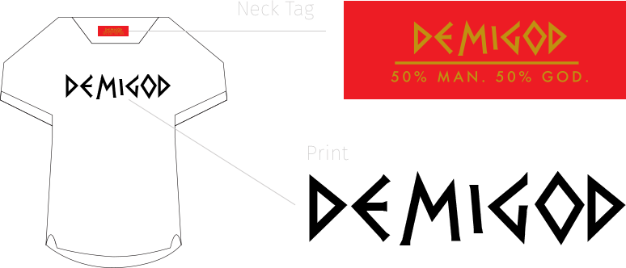

Overview
Demigod is an up & coming, NY based, contemporary-urban streetwear brand that I co-founded alongside my brother, Jacob. Within a year's time, I played an integral part in taking the brand's clothing from concept to reality.
Role:
Designer/Researcher/Idenitity/Hustler Extraodinaire
When:
February 2013 - March 2014
Research & Development

Roughly 8 years apart in age, Jacob & I could not agree on what kind of clothing we should make. Eventually, the light bulb went off & we realized we both studied Latin back in high school. A few minutes later, Demigod was born.
We decided our clothing should reflect our love of modern streetwear & classic Roman/Greek culture. To get research rolling, I perused through an old copy of Ecce Romani (Latin textbook).

So, what do you get when you fuse together a modern day streetwear essential like the t-shirt with a staple of ancient Roman streetwear, the tunic? Something I've dubbed The "Palla". Essentially, the Palla removes the typical crewneck collar of a basic t-shirt and replaces it with the square-neck line found on ancient Roman & Greek tunics.
Materials
Although aestethically pleasing to the eye, a square neckline is not as functional as a crewneck when implemented on certain materials, so choosing the right fabric was important to the design process.
We planned to release a small run of shirts by mid-spring, which meant acquiring both light & mid-weight fabrics to account for the weather transitions occuring around that time. Just as importantly, I wanted the fabrics we used to tell the story of Demigod; fabrics that could convey the unbelievable combination of divine strength & physical vuneralability found within the heroes of Roman & Greek mythology. Ultimately, we went with organic bamboo and incredibly well knit french terry cottons.

Finding a Factory
Just when I thought my job was done, it was just getting started. We had a great idea, but there was one small problem... Neither one of us could sew. The solution: I put on my Catfish cap, channeled my inner Neive, and went to google to find places that could translate our designs from concept to actual clothing.
Finding a factory was tough for a few reasons:
1. We only wanted a small run of clothes made & that isn't very cost effective for most factories.
2. We wanted a small run of clothes run made AND were on a shoe-string budget, so you can imagine what most factory owners had to say about that.
3. Although production abroad is significantly cheaper, it was absolutely off the table because a. it's risky, b. We live in Maryland, so it was crucial to find a factory located on the East coast, just in case we needed to physically check on production, and c. There's no way for me to know if an overseas factory is compliant with labor laws, human rights, etc.
4. I'm a huge advocate of supporting locally owned businesses and the American economy whenever possible.
Long story short, we found a factory... eventually
Identity

The Name
One day, while discussing possible names for the company, Jacob randomly mentioned how he wanted to get a tattoo on the back of his neck of the word "Demigod". As soon as he said it, I knew we finally had a name.
Much of ancient Roman and Greek mythology centers around stories of heroic men & women who were descendants of Gods. The Romans and Greeks believed that it was the divine blood flowing though the veins of these heroes that helped them to accomplish such amazing feats. So much so, it was unimaginable to think of these beings as just mere mortals. Instead, Romans & Greeks called these individuals Demigods.

The main focus of the Demigod brand was to express those ancient stories & myths through a modern lense and create the classic & seemingly unimaginable.
The logo mark is an illustration of Heracles, a mythylogical Greek hero famous for being the son of the god Jupiter. Heracles, well known for his extrodinary strength, courage, and wit, seemed like a perfect fit for our logo. So, I had my brother draw up a quick sketch and then I went into Illustrator and made some magic happen.
For the color palette, I went with a red & gold combination. The red represents humanity, while the gold symbolizes the divine. Since these particular colors are a true embodiment of what Demigod is, I applied them to the design of neck tags that would be sewn onto each shirt.
The Finished Product
Special thanks to my photographer friend, Mario Newball, for all the great photos he was able to capture for us last minute.